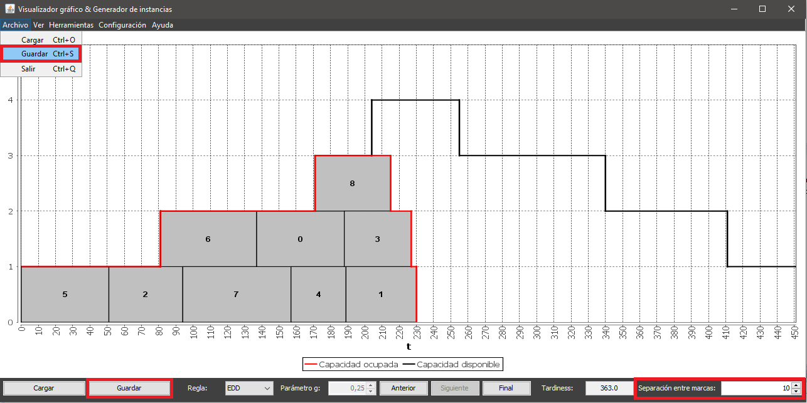
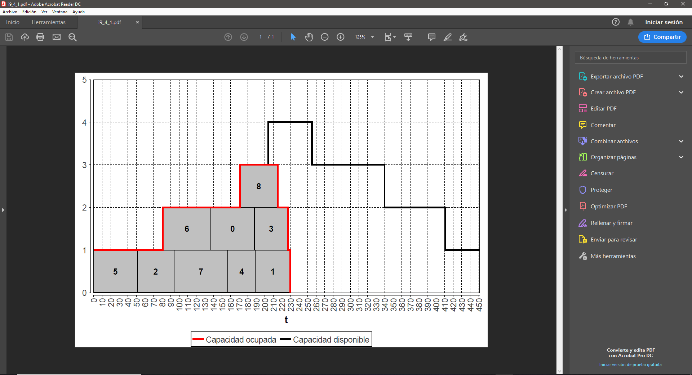
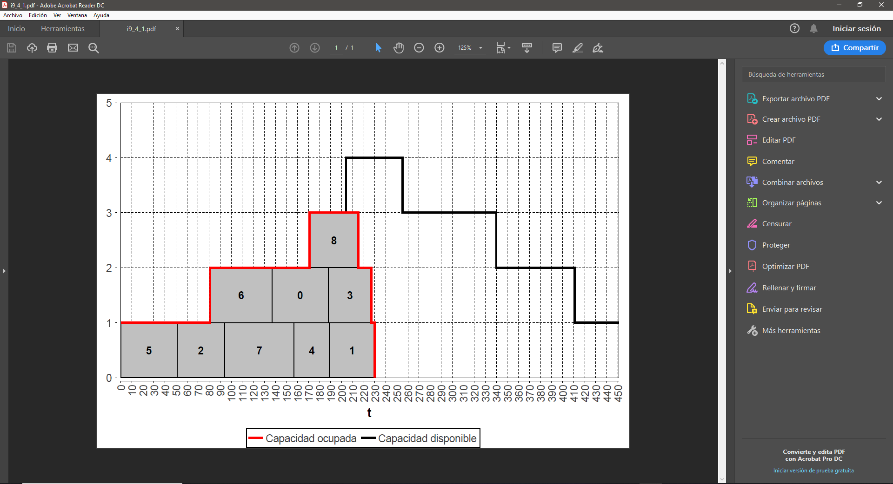

Para guardar una instancia es necesario disponer de una instancia cargada en la aplicación. Una vez se cumple esta condición puede accederse al guardado de instancias de varias formas:
También, se puede modificar el valor numérico especificado junto a la etiqueta Separación entre marcas para escoger con que separación inicial entre marcas de graduación se desea guardar la instancia.
Una vez accedida a la opción se desplegará un diálogo donde el usuario podrá navegar por sus directorios y escoger el nombre del fichero a guardar (no es necesario especificar la extensión, el sistema automáticamente asignará la extensión PDF al archivo creado). El fichero generado podrá visualizarse con cualquier software que soporte PDF.
 
